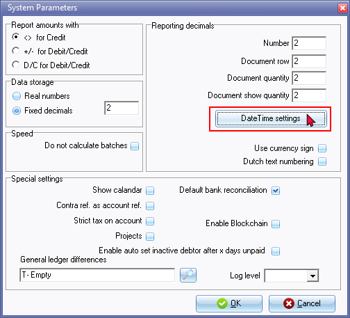
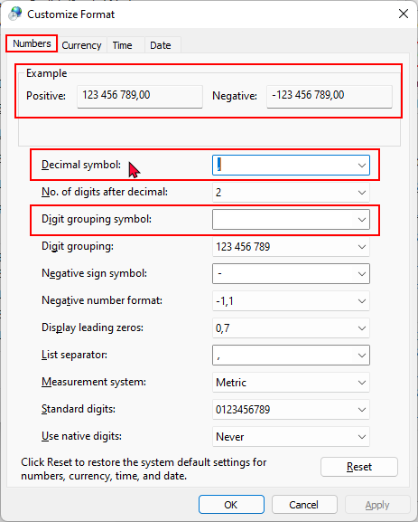
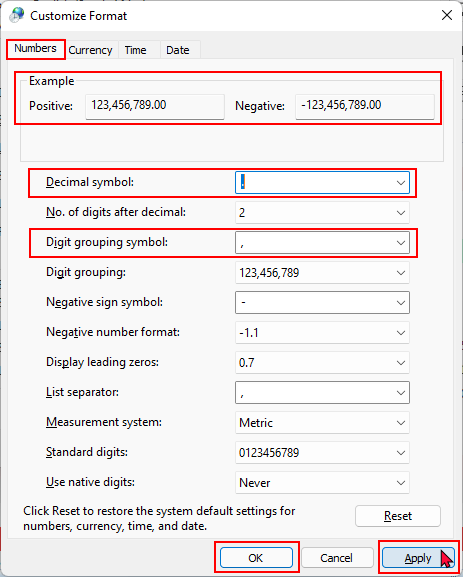

System settings - Number format
You may need to set the number format of your operating system to print some reports.
When printing the “Budget vs actual” and “This year vs last year” reports, you may encounter the following error message:
"Type conversion error 'Val':Expression TRpExpression46"
|
|
Batch processing options - Create receipts (Receipt batches) option - If your system's digit separator is set to a comma and your system's Decimal symbol is set to a period, do not enter a comma as the decimal separator in the "Amount" field. For example, if an amount of 1150,00 is entered using a comma as a digit separator, it will print and generate the transaction amount as 115,000.00 instead of 1,150.00. |

The “Customize Format - Numbers” of your Windows operating system number format needs to be set as follows:
- Decimal symbol - set to period ( . )
- Digit grouping symbol - set to comma ( , ) (If Digit grouping symbol is set to blank it does not print but produces an error.
|
|
The Region and Language settings of your operating system should launch if you click on the Setup → Company info - Options - Set Windows date format/style button on the Setup ribbon. |

|
|
This is a global setting for all Sets of Books on your operating system. |

To change the number format of your operating system:
- In any active (opened) Set of Books, select Setup → System parameters (Setup ribbon).

- On the "System Parameters" click on the DateTime settings button.

- On the Formats tab, click on the Additional settings ... button.

- On the Numbers tab, the default settings (as per new installaion of Windows or on some new devices), the settings that need to be changed is as follows:
- Decimal symbol set to period ( . )
- Digit grouping symbol set to comma ( , )
|
|
If Digit grouping symbol is set to blank; and when you click on the Print button of the “Budget vs actual” and “This year vs last year” reports; it does not print but produces same error; i.e. “Type conversion error 'Val':Expression TrpExpression46” |

- After changing the number formats, the "Example" on the Numbers tab of the "Customize Format" screen, should display as follows:

- Click on the Apply and OK buttons of the "Customize Format" - Numbers tab, as well as the "Region" - Formats screen.
- You may need to exit (close) osFinancials for these changes to be updated when generating and printing reports.